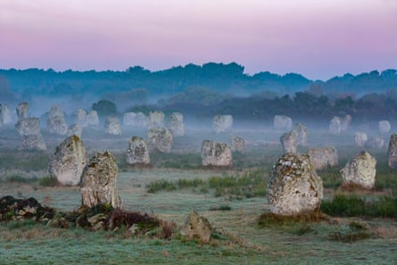

A huge megalithic complex of more than 500 standing stones has been discovered in southern Spain that could be one of the largest in Europe, archaeologists have said.
The stones were discovered on a plot of land in Huelva, a province flanking the southernmost part of Spain’s border with Portugal, near the Guadiana River.
Spanning about 600 hectares (1,500 acres), the land had been earmarked for an avocado plantation. Before granting the permit the regional authorities requested a survey in light of the site’s possible archaeological significance. The survey revealed the presence of the stones.
“This is the biggest and most diverse collection of standing stones grouped together in the Iberian peninsula,” said José Antonio Linares, a researcher at Huelva University and one of the project’s three directors. It was probable that the oldest standing stones at the La Torre-La Janera site were erected during the second half of the sixth or fifth millennium BC, he said. “It is a major megalithic site in Europe .”
At the site they found a large number of various types of megaliths, including standing stones , dolmens, mounds, coffin-like stone boxes called cists, and enclosures.
“Standing stones were the most common finding, with 526 of them still standing or lying on the ground,” said the researchers in an article published in Trabajos de Prehistoria, a prehistoric archaeology journal. The height of the stones was between one and three metres.
At the Carnac megalithic site in north-west France, there are about 3,000 standing stones.
Alignments of Menhirs of Menec in Carnac, western France.Photograph: Andia/Alamy
One of the most striking things was finding such diverse megalithic elements grouped together in one location and discovering how well preserved they were, said Primitiva Bueno, co-director of the project and a prehistory professor at Alcalá University, near Madrid.
“Finding alignments and dolmens on one site is not very common. Here you find everything all together – alignments, cromlechs and dolmens – and that is very striking,” she said, hailing the site’s “excellent conservation”.
An alignment is a linear arrangement of upright standing stones along a common axis, while a cromlech is a stone circle, and a dolmen is a type of megalithic tomb usually made of two or more standing stones with a large flat capstone on top.
Most of the menhirs were grouped into 26 alignments and two cromlechs, both located on hilltops with a clear view to the east for viewing the sunrise during the summer and winter solstices and the spring and autumn equinoxes, the researchers said.
Many of the stones are buried deep in the earth. They will need to be carefully excavated. The work is scheduled to run until 2026, but “between this year’s campaign and the start of next year’s, there will be a part of the site that can be visited”, Bueno said.